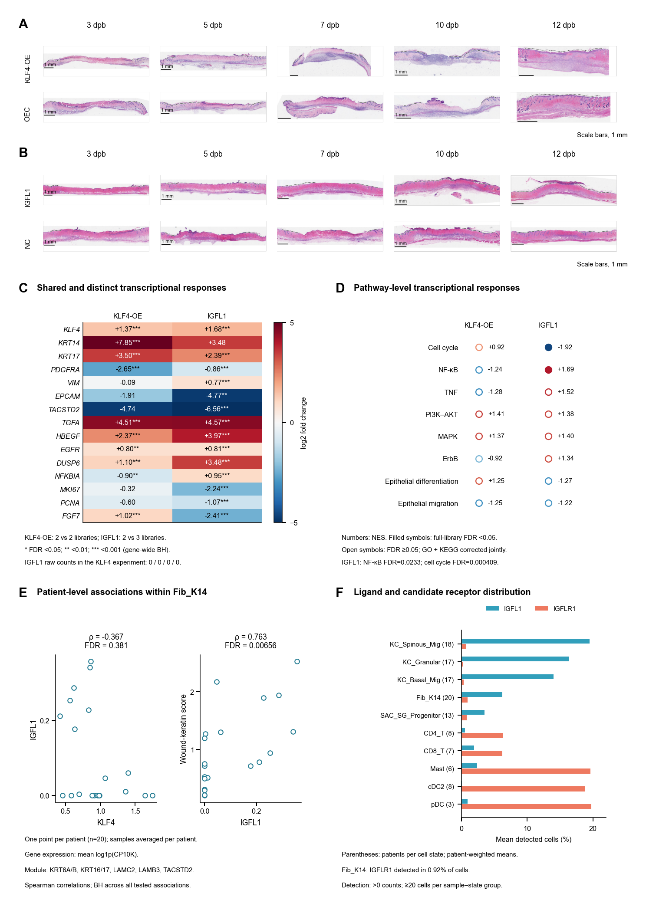

Retained H&E fields, shared gene responses, full-library GSEA, patient-level associations and receptor-expression distribution.
Rebuilt computational panels
Source data · Panel manifest · Execution report

| Panel | Description | Status |
|---|---|---|
| S7A | KLF4 histology | executed_verified |
| S7B | IGFL1 histology | executed_verified |
| S7C | Shared and distinct gene responses | executed_verified |
| S7D | Full-library-corrected GSEA | executed_verified |
| S7E | Patient-level associations | executed_verified |
| S7F | Patient-balanced ligand/receptor detection | executed_verified |
S7A/B preserve supplied experimental rasters. S7C–F are data-derived plots. The regulatory interpretation is partial convergence of IGFL1-responsive and KLF4-associated repair programs.